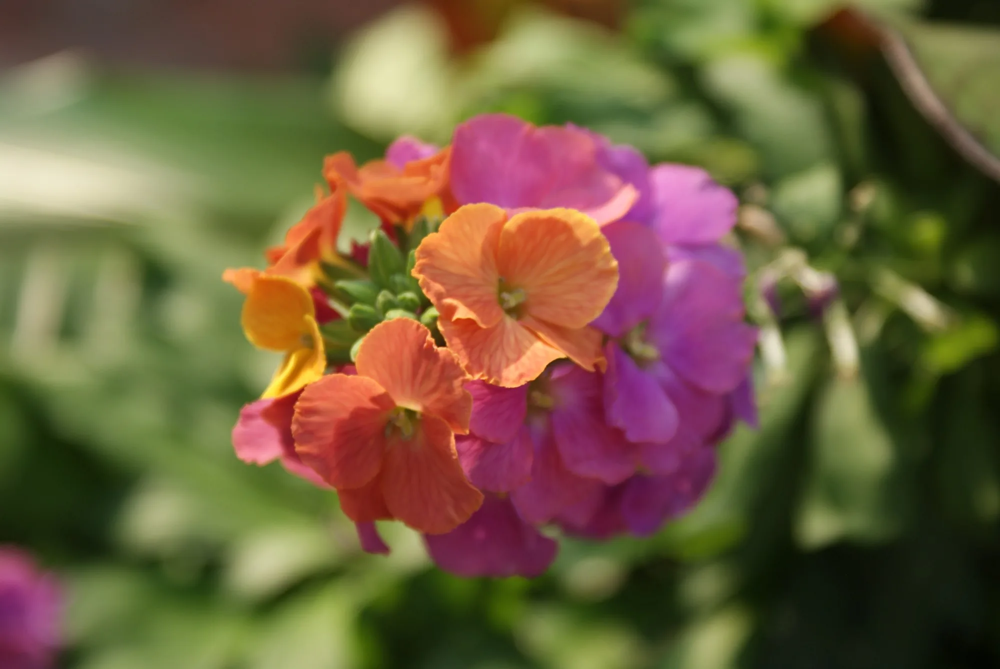
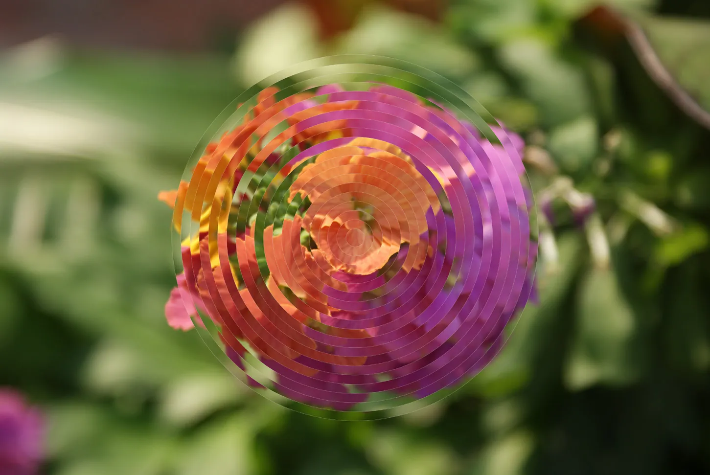
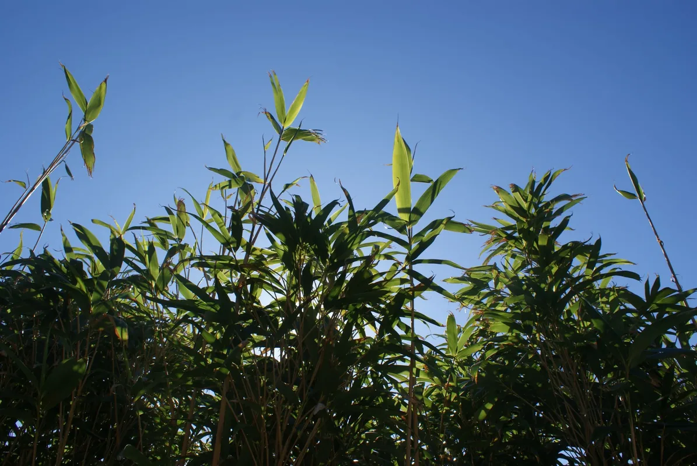
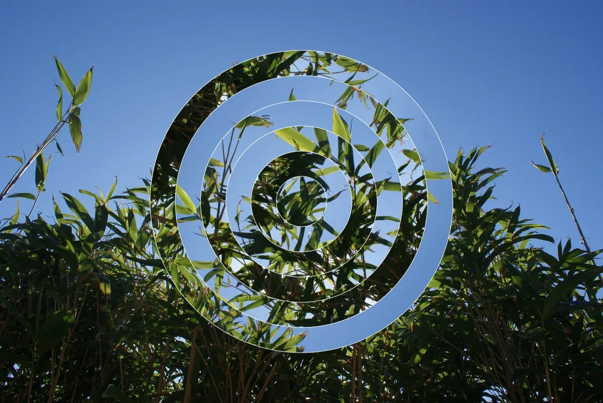
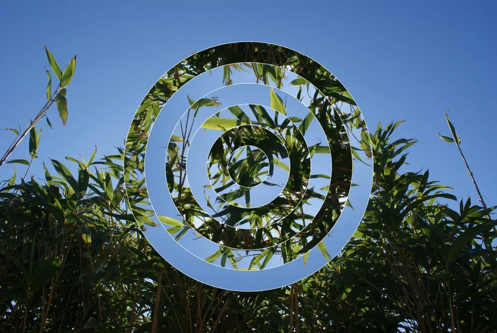

Coded Visuals
A creative coding exploration using p5.js to manipulate photography through generative patterns - translating natural phenomena like ripples, growth and cyclical time into coded visual systems, then applied to still photographs of natural forms.



Concentric Circles: Split and Rotate, running live. Nature is governed by cyclical time.


